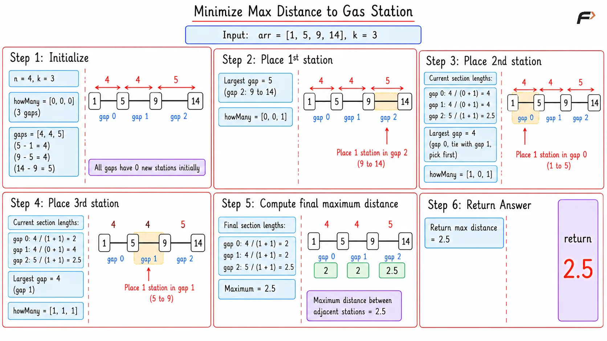
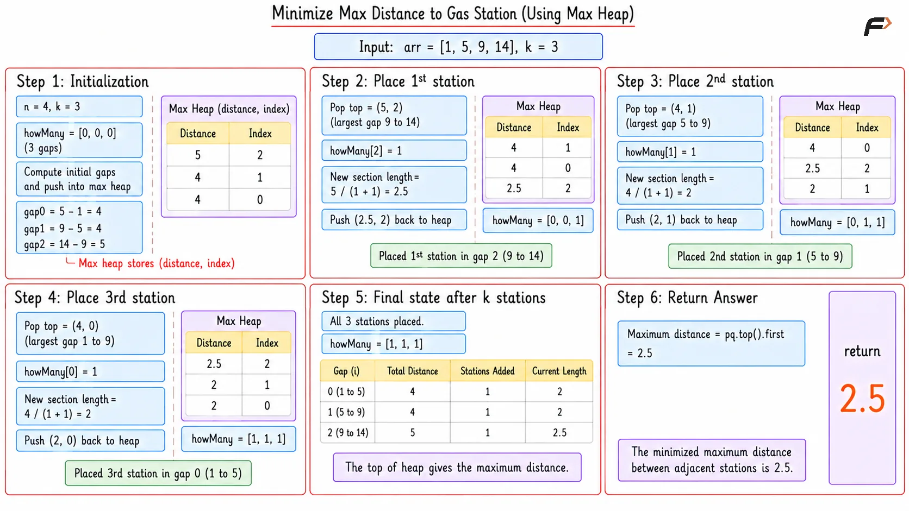
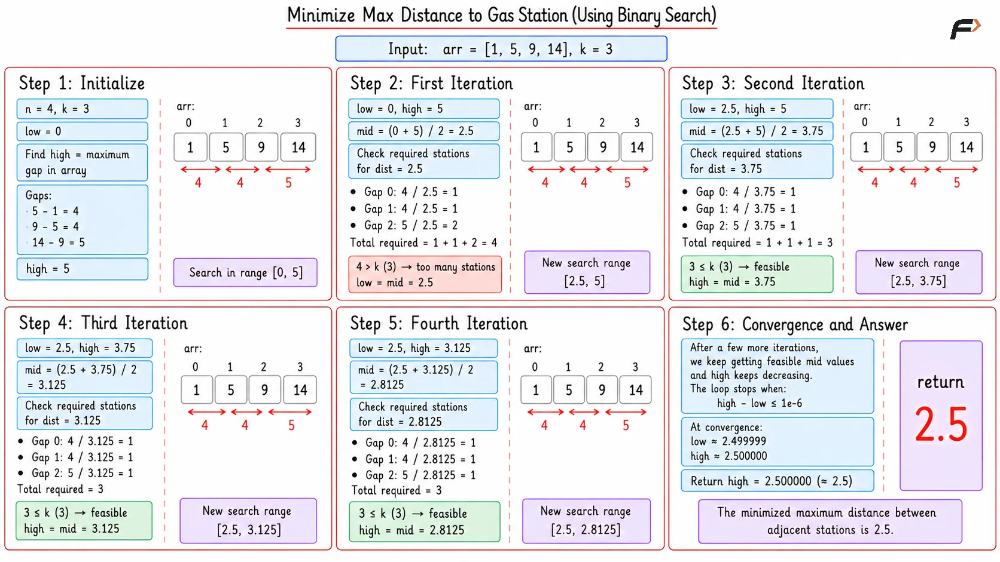

Minimize Maximum Distance Between Gas Stations
You are given a sorted array representing the exact integer positions of several gas stations on a highway. You are also given an integer k, which represents the number of brand new gas stations you are allowed to build. You can place these new gas stations anywhere on the highway, including at non-integer decimal positions. Your objective is to place these k new stations in a way that minimizes the maximum distance between any two adjacent gas stations. You must return this optimized maximum distance, accurate to 1e-6.
Example 1
Input: arr = [1, 2, 3, 4, 5], k = 4
Output: 0.500000
Explanation: The original distance between every adjacent station is 1. We have 4 new stations to build. By placing exactly one new station perfectly halfway between every existing pair (at 1.5, 2.5, 3.5, and 4.5), the new maximum distance between any two stations becomes exactly 0.5.
Example 2
Input: arr = [2, 12], k = 4
Output: 2.000000
Explanation: We only have two stations with a massive gap of 10 between them. We must place all 4 new stations into this single gap. This divides the gap into 5 equal sections. Dividing 10 by 5 gives a distance of 2.0.
Brute Force Approach
We want to shrink the largest gaps between stations. To do this, you need to place k extra stations within the longest empty stretches. The most straightforward way is to scan the distances between all current stations, find the single largest gap, and place one new station there. Then, you scan the distances all over again to find the new largest gap, and place your next station. You repeat this full scanning process k times until all k additional stations are placed.
Algorithm
Create an array called howMany of size n-1 to keep track of the number of placed gas stations in each original gap. Initially, all values are zero.
Run an outer loop exactly k times to place one gas station at a time.
Inside this loop, run an inner loop through all the original gaps to find the one with the current maximum distance. The distance for any gap is calculated by dividing its initial length by the number of stations placed in it plus one.
Once the largest gap is found, increment its count in the howMany array.
After all k stations are placed, run one final loop to find the maximum distance among all the gaps using the same division formula.
Return this maximum distance as the answer.
Dry Run

Minimize Maximum Distance to Gas Station Brute Dry Run
Solution
#include <bits/stdc++.h>
using namespace std;
class Solution {
public:
// Manually scans the array k times to find and divide the largest current gap
long double minimiseMaxDistance(vector<int> &arr, int k) {
int n = arr.size();
// Array to track how many new stations are added in each original gap
vector<int> howMany(n - 1, 0);
// Place k stations one by one in the largest available gaps
for (int stations = 1; stations <= k; stations++) {
long double maxSection = -1.0;
int maxIndex = -1;
// Scan all gaps to find the current maximum section length
for (int i = 0; i < n - 1; i++) {
long double diff = arr[i + 1] - arr[i];
long double sectionLength = diff / (long double)(howMany[i] + 1);
// Keep track of the largest gap found
if (sectionLength > maxSection) {
maxSection = sectionLength;
maxIndex = i;
}
}
// Add one station to the largest found gap
howMany[maxIndex]++;
}
long double maxAns = -1.0;
// Calculate the final maximum distance across all sections
for (int i = 0; i < n - 1; i++) {
long double diff = arr[i + 1] - arr[i];
long double sectionLength = diff / (long double)(howMany[i] + 1);
maxAns = max(maxAns, sectionLength);
}
return maxAns;
}
};
// Driver code starts here
int main() {
Solution obj;
vector<int> arr = {1, 2, 3, 4, 5};
int k = 4;
long double ans = obj.minimiseMaxDistance(arr, k);
cout << fixed << setprecision(6) << ans << endl;
return 0;
}Complexity Analysis
Time Complexity: O(k × N), where N is the number of given gas stations. We loop through all N-1 gaps exactly k times, which makes the approach very slow for large inputs.
Space Complexity: O(N), as we allocate an additional array of size N-1 to track the stations placed in each gap.
Better Approach
The brute force approach is highly inefficient because we manually scan the entire array every single time we want to find the largest gap. We can vastly improve this by using a max heap (priority queue), which automatically organizes data to keep the largest gap right at the top. This completely eliminates the need for repetitive scanning. By maintaining our distances in a priority queue, we can instantly retrieve the largest gap whenever we need to place a new station.
Algorithm
Declare an array howMany to keep track of the placed gas stations in each original gap, and initialize a priority queue that acts as a max heap.
Loop through the original array and insert all the initial distances, along with their respective index, into the max heap.
Run a loop exactly k times picking one gas station at a time.
Pick the first element of the priority queue, which guarantees the maximum current distance. Note its original index.
Place the current gas station in this gap by incrementing its count in the howMany array.
Calculate the new divided section length for this gap and insert it back into the priority queue.
After processing all k stations, the distance remaining at the very top of the priority queue will be our final answer.
Dry Run

Maximize Distance to Gas Station Better Dry Run
Solution
#include <bits/stdc++.h>
using namespace std;
class Solution {
public:
/*
Utilizes a max heap to continuously retrieve and divide
the largest available distance segment efficiently
*/
long double minimiseMaxDistance(vector<int> &arr, int k) {
int n = arr.size();
// Array to track how many new stations are added in each original gap
vector<int> howMany(n - 1, 0);
// Max heap to store pairs of current gap distance and its original index
priority_queue<pair<long double, int>> pq;
// Populate the heap with the initial gaps between stations
for (int i = 0; i < n - 1; i++) {
pq.push({arr[i + 1] - arr[i], i});
}
// Place k stations one by one by always splitting the largest gap
for (int stations = 1; stations <= k; stations++) {
// Retrieve the maximum gap from the top of the heap
auto top = pq.top();
pq.pop();
int secIndex = top.second;
// Add a station to this specific gap segment
howMany[secIndex]++;
// Calculate the newly divided segment length
long double originalDiff = arr[secIndex + 1] - arr[secIndex];
long double newSectionLen = originalDiff / (long double)(howMany[secIndex] + 1);
// Reinsert the reduced gap back into the heap for future operations
pq.push({newSectionLen, secIndex});
}
// The maximum distance is guaranteed to be at the top of the heap
return pq.top().first;
}
};
// Driver code starts here
int main() {
Solution obj;
vector<int> arr = {1, 2, 3, 4, 5};
int k = 4;
long double ans = obj.minimiseMaxDistance(arr, k);
cout << fixed << setprecision(6) << ans << endl;
return 0;
}Complexity Analysis
Time Complexity: O((N + K) x log2 N). We take N x log N time to build the initial heap of gaps. Then, extracting and inserting back into the heap takes log2 N time, and we do this exactly k times.
Space Complexity: O(N), to maintain the howMany array and the priority queue which stores all the segment distances.
Optimal Approach
The priority queue method is highly inefficient for extremely large values of k. Simulating the placements step-by-step by popping and pushing to a heap repeatedly will result in a Time Limit Exceeded error. We can optimize this by bypassing the step-by-step simulation entirely and using Binary Search on Answers to directly find the final maximum distance.
Instead of placing stations one by one, we guess a maximum distance and check if it is achievable using at most k extra stations. For any guessed maximum distance mid, we can calculate the exact number of stations required to ensure no gap exceeds mid.
If the required number of stations is strictly greater than k, this guessed distance is too small and is not possible. We must increase our guessed distance.
If the required number of stations is less than or equal to k, the distance is possible. Since our goal is to minimize the maximum distance, we will record this answer and try to find an even smaller distance by reducing our guess.
This property creates a monotonic search space of the format: [not possible, not possible, ..., possible, possible]. By repeatedly halving the search space using binary search, we can efficiently pinpoint the exact minimum possible maximum distance without simulating any individual placements.
Algorithm
First, find the maximum initial distance between two consecutive gas stations.
Initialize two pointers for our search range. The low pointer will start at 0, and the high pointer will start at the maximum initial distance we just found.
Start a binary search loop that continues as long as the difference between high and low is greater than 1e-6. This ensures high decimal precision.
Calculate the mid value.
Pass this mid distance to a helper function. This function loops through all original gaps and divides them by the mid value to calculate how many total new stations are required to ensure no gap is larger than mid.
If the required number of stations is greater than k, our mid distance is too small and strict. Eliminate the left half by setting low equal to mid.
If the required stations are less than or equal to k, this distance works. We eliminate the right half to find an even smaller minimum by setting high equal to mid.
Return the high pointer as our finalized optimal answer.
Key Points
Floating-point division for
mid: Unlike standard binary search which uses integer division to find array indices or discrete values,midin this approach is calculated using normal floating-point division (e.g.,(low + high) / 2.0). This is because the distance between stations can be a decimal or fractional value. Since our search space is continuous rather than discrete, we must use floating-point numbers to accurately calculate and pinpoint the exact minimized gap with high precision.
Dry Run

Maximize Distance to Gas Station Optimal Dry Run
Solution
#include <bits/stdc++.h>
using namespace std;
class Solution {
public:
/*
Helper function to verify how many gas stations are required
to enforce a specific maximum distance rule across all gaps
*/
int numberOfGasStationsRequired(vector<int>& arr, long double dist) {
int required = 0;
// Check every existing gap between stations
for (int i = 0; i < arr.size() - 1; i++) {
// Count how many sections of 'dist' length fit inside the gap
required += (int)((arr[i + 1] - arr[i]) / dist);
}
return required;
}
/*
Optimal approach using binary search to guess the maximum distance
and validate it against our allowed station capacity
*/
long double minimiseMaxDistance(vector<int> &arr, int k) {
long double low = 0;
long double high = 0;
// Find the absolute maximum gap to act as the upper search boundary
for (int i = 0; i < arr.size() - 1; i++) {
high = max(high, (long double)(arr[i + 1] - arr[i]));
}
// Loop runs until the search boundaries are precise to 6 decimal places
while (high - low > 1e-6) {
// Guess the middle distance
long double mid = low + (high - low) / 2.0;
// Validate if the guessed distance fits within our allowed k stations
if (numberOfGasStationsRequired(arr, mid) > k) {
// Too many stations needed, distance is too strict
low = mid;
} else {
// Feasible distance, attempt to restrict it further
high = mid;
}
}
// Return the precise finalized upper bound
return high;
}
};
// Driver code starts here
int main() {
Solution obj;
vector<int> arr = {1, 2, 3, 4, 5};
int k = 4;
long double ans = obj.minimiseMaxDistance(arr, k);
cout << fixed << setprecision(6) << ans << endl;
return 0;
}Complexity Analysis
Time Complexity: O(N x log2(Max / 1e-6)), where N is the length of the array and Max is the highest starting distance gap. The binary search halves the precision bracket logarithmically, and traversing the array occurs inside each precision step.
Space Complexity: O(1), no extra structures or arrays are created. The process runs perfectly using basic numeric pointers and basic math variables.
Interview follow-up Questions
The problem requests exact floating-point answers instead of typical whole integers. Because decimals never cross cleanly like integers do in standard logic bounds, we force the loop to stop when the search bracket squeezes down to a size of 0.000001, providing the mathematically required accuracy.